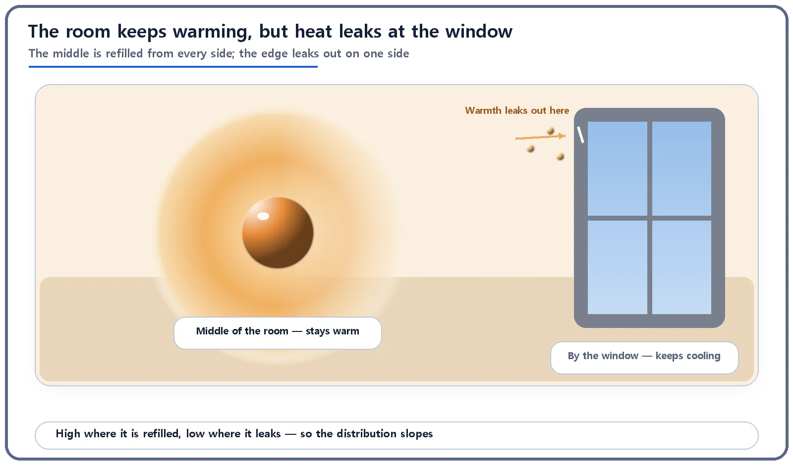
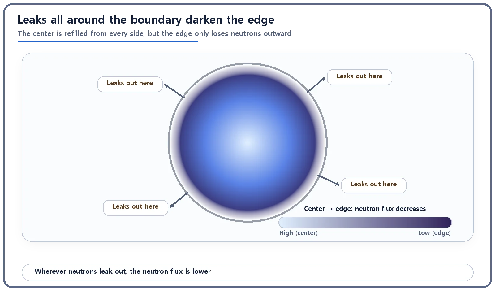

Neutron Physics & the Core · 082
Why Is the Window Seat Always Colder? — Why the Neutron Flux Distribution Isn't Flat
The center of a core is refilled with neutrons from every side, while the edge keeps leaking them outward, just like warmth escaping at a window.
Neutron flux is highest at the center of a reactor core and falls off toward the edge because the center is refilled with neutrons from every side, while the edge keeps losing neutrons outward through leakage. The shape is not a defect; it follows from the finite size of the core, and designers deliberately flatten it.
Why is the window seat always colder?
When you pick a seat in a café or an office in winter, do you quietly avoid the window? The heating is the same everywhere, yet the inner part of the room is fairly evenly warm and only near the window does the temperature drop off. Why the window, of all places?
The answer shares exactly the same logic as a question about reactor cores: why the neutron flux is high in the middle of the core and falls off toward the edges. Here we go beyond the fact that such a distribution exists and use the window analogy to explain why it takes that shape.
A quick refresher: what is neutron flux?
Neutron flux (usually written φ) is not "how many neutrons are sitting at a spot" (density) but "how actively neutrons are passing through that spot" (traffic). The bigger it is, the more chances for fission and other neutron–nucleus reactions there. And it is not the same everywhere: in general it is highest at the center of the core and falls off gently toward the outer edge.
The room keeps warming, but warmth leaks out the window
Imagine a room with several heaters scattered around, so the whole room is constantly being warmed. Stand in the middle and warm air surrounds you on every side, so that spot stays warm. By the window, though, there is no more warm room on one side, only the cold outdoors. Warmth seeps out through gaps in the frame and nothing refills it from that direction, so the temperature drops as you get closer to the window.
Neutrons in a core are in exactly the same situation. A neutron born near the center is surrounded on all sides by fuel material where fission is happening; whichever way it scatters, it mostly stays inside the core. The center keeps getting topped up from every direction. Near the edge, one direction is no longer core. A neutron heading that way doesn't come back; it slips out of the core. That is leakage. Neutrons flowing in from the inner side can't fully make up for it, so the flux drops off toward the edge.

Because this balance between refilling and leaking differs from place to place, the flux traces a curve that is highest at the center and lower toward the edges.
In numbers: high in the middle, zero just beyond the edge
For a highly simplified core (a slab of uniform material with no reflector), the curve is known to follow, roughly, a cosine shape:
φ(x) ∝ cos(B·x)
Here x is the distance from the center of the core, and B is a constant set by the core's size and materials, called the "buckling"; think of it as how sharply the curve bends. Two things matter. First, the curve is largest at the center (x = 0) and decreases gently with distance. Second, it does not snap to zero at the physical edge of the core. It is drawn to reach exactly zero, in theory, at an imaginary point slightly beyond the edge, called the extrapolated boundary.
In window terms, the temperature doesn't drop straight to outdoor levels at the window frame; the room's warmth reaches a little past the window before fading away.

Too peaked if left alone, so it's deliberately flattened
Left alone, a sharply peaked distribution piles heat production up at the center, raising the risk of overheating the fuel there, while fuel at the edges sits idle. So real power reactor cores are deliberately flattened:
| Method | How it flattens the flux |
|---|---|
| Reflector | Surrounding the core with a moderator or similar material bounces some escaping neutrons back, lifting the flux near the edge (like a thick curtain over the window). |
| Enrichment layout | Relatively lower-enrichment fuel in the center and relatively higher enrichment toward the edge reduce central peaking. |
| Control rods and burnable poisons | Locally suppressing the flux in the center evens out the overall distribution. |
Even so, the distribution never becomes perfectly flat; the center stays higher than the edge. Still, this shaping greatly reduces excessive central peaking, letting the whole core be used more efficiently and safely.
"Isn't the low-flux edge the safer place?"
It's tempting to think the low-flux edge is safer and the center is dangerous. More precisely, the higher flux (and heat production) at the center means designers must secure a more generous safety margin for that spot in advance. It does not mean the center of a properly designed and operated plant is actually at a dangerous level. Nor does the uneven shape come from a defect; it follows from the fact that a core has a finite size and leakage always happens at its boundary.
Flux is also not the same as temperature. The trend is often discussed as roughly similar to the heat-production pattern, but flux measures how actively neutrons travel and react. And it differs from the non-leakage probability, the core-wide fraction of neutrons that avoid leaking away; here the topic is the shape of the distribution inside the core, position by position.
Understanding the cause, leakage, explains why designers tune fuel layout, reflectors and control rod positions so carefully. Flux (power) detectors inside and outside the core monitor the distribution in real time to confirm it stays within that basic "center higher than edge" pattern.
The takeaways
The center is refilled from every side; the edge leaks neutrons outward, so the flux is highest in the middle. The curve reaches zero, in theory, slightly beyond the physical edge (the extrapolated boundary). Reflectors, enrichment layout and control rods flatten the distribution on purpose, and knowing this unevenness accurately is the starting point for securing the fuel's safety margins.